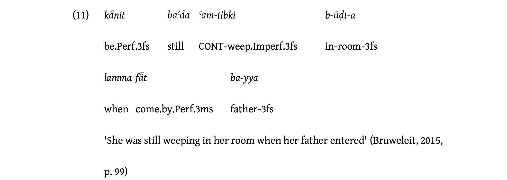

Continutives in Africa
1. Languages
All African languages included in the sample.
1.1. List
1.2. Map
2. Examples

Afro-Asiatic
North Levantine Arabic (Versteegh 2018:246)

The continuative marker: copula + baʿda + ʿam-.


3. Parameters
3.1. Morposyntactic status
3.2. Meaning in combination with negation
3.3. TAM restrictions
3.4. Expectation implicature
3.5. Adjacent meanings
3.6. Other uses
3.7. Diachronic sources
References
Armbruster, C. H. 1960. Dongolese Nubian: A Grammar. Cambridge: Cambridge University Press.
Bayou, T. N. 2014. Documentation and grammatical description of kwom.
Blackings, M. and N. Fabb. 2003. A Grammar of Ma’di. Berlin: Mouton de Gruyter.
Fedotov, M. 2015. To be continued... : Приключения континуативного показателя в языке гбан [to be continued…: Adventures of the continuative marker in gban].
Fehn, A.-M. 2014. A grammar of ts’ixa (kalahari khoe).
Heath, J. 2008. A Grammar of Jamsay. Berlin: Mouton de Gruyter.
Hellenthal, A. C. 2010. A Grammar of Sheko. Utrecht: LOT.
Lanham, L. W. and D. P. Hallowes. 1956. ‘An Outline of the Structure of Eastern Bushman’. African Studies 15: 97–118.
Lyth, R. E. 1971. A Murle Grammar. Khartoum: Sudan Research Unit, University of Khartoum.
Moodie, J. and R. Billington. 2020. A Grammar of Lopit. Leiden: Brill.
Persohn, B. 2017. The Verb in Nyakyusa: A Focus on Tense, Aspect, and Modality. Berlin: Language Science Press.
Rapold, C. 2006. Towards a grammar of benchnon.
Schrock, T. 2014. A grammar of ik (icé-tód): Northeast uganda’s last thriving kuliak language.
Vanderelst, J. 2016. A Grammar of Dagik: A Kordofanian Language of Sudan. Cologne: Köppe.
Versteegh, K. 2018. ‘Temporal Adverbs of Contrast in the Basic Variety of Arabic’. In Manfredi, S. and M. Tosco (eds), Arabic in contact. Amsterdam, Philadelphia: John Benjamins, 233–250.